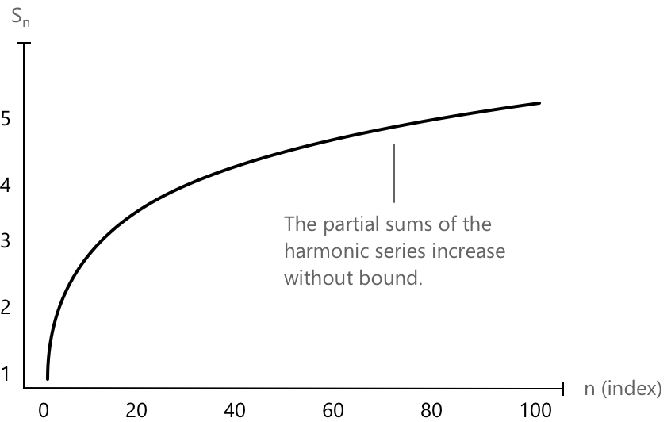

Гармонійний ряд
Що таке гармонійний ряд
Гармонійний ряд визначається як нескінченна сума:
\[ \sum_{k=1}^{\infty} \frac{1}{k} \]
де кожен член є оберненим значенням натурального числа. Незважаючи на те, що члени прямують до нуля, ряд розбігається, тобто сума зростає необмежено. Зокрема, оскільки гармонійний ряд є рядом з додатними членами, можна показати, що він розбігається до плюс нескінченності. Дійсно, оскільки ряд має додатні члени, границя послідовності його часткових сум існує:
\[ S = \lim_{n \to +\infty} s_n = \lim_{n \to +\infty} \sum_{k=1}^{n} \frac{1}{k} \]
На перший погляд може здатися, що при \( n \to \infty \) члени гармонійного ряду прямують до нуля, і тому сам ряд може збігатися. Однак це логічна помилка: хоча члени \( \frac{1}{n} \) дійсно наближаються до нуля, вони роблять це недостатньо швидко для збіжності ряду.

Ось графік часткових сум гармонійного ряду до \(n = 100.\) Як видно, крива повільно, але безперервно зростає, підтверджуючи, що ряд є розбіжним.
Існує кілька способів довести, що гармонійний ряд розбігається. Один підхід полягає у використанні часткових сум, як показано нижче:
\[ \sum_{k=1}^{\infty} \frac{1}{k} = 1 + \frac{1}{2} + \left( \frac{1}{3} + \frac{1}{4} \right) + \left( \frac{1}{5} + \frac{1}{6} + \frac{1}{7} + \frac{1}{8} \right) + \cdots \]
Кожна група містить удвічі більше членів, ніж попередня. Зауваживши, що кожна група додає до суми принаймні \( \frac{1}{2} \), робимо висновок, що загальний ряд зростає необмежено:
\[ \sum_{k=1}^{\infty} \frac{1}{k} = \infty \]
Отже, гармонійний ряд розбігається.
Знання поведінки гармонійного ряду та його варіантів є корисним, оскільки ознака порівняння часто дозволяє зв’язати складний ряд з гармонійним для перевірки його збіжності.
Узагальнений гармонійний ряд (p-ряд)
Розглянемо узагальнену версію гармонійного ряду, де знаменник піднесено до степеня \( a \):
\[ \sum_{k=1}^{\infty} \frac{1}{k^a} \]
Цей ряд, відомий як узагальнений гармонійний ряд, має додаткову особливість порівняно зі стандартним гармонійним рядом: його збіжність або розбіжність залежить від значення показника \( a \). Маємо:
- Якщо \( a > 1 \), ряд збігається.
- Якщо \( a \leq 1 \), ряд розбігається.
Необхідна умова збіжності ряду \( \sum a_k \) полягає в тому, що загальний член прямує до нуля:
\[ \lim_{k \to \infty} a_k = 0. \]
Якщо ця умова не виконується, тобто якщо \( \lim_{k \to \infty} a_k \neq 0 \), то ряд розбігається. У випадку узагальненого гармонійного ряду з показником \( a \leq 1 \) ця умова не виконується. Наприклад, коли \( a = 0 \), члени стають сталими \( a_k = 1 \), і:
\[ \lim_{k \to \infty} \frac{1}{k^0} = \lim_{k \to \infty} 1 = 1 \neq 0. \]
Отже, ряд розбігається, оскільки його загальний член не прямує до нуля.
Коли \( a > 1 \), можна застосувати інтегральну ознаку для визначення збіжності ряду. Розглянемо відповідний невласний інтеграл:
\[ \int_1^{\infty} \frac{1}{x^a} \, dx \]
Оскільки \( a > 1 \), маємо:
\[ \int_1^{\infty} \frac{1}{x^a} \, dx = \lim_{t \to \infty} \int_1^t x^{-a} \, dx \]
Обчислюючи інтеграл на кінцях, отримаємо:
\[ \lim_{t \to \infty} \left[ \frac{x^{1-a}}{1 – a} \right]_1^t = \lim_{t \to \infty} \left( \frac{t^{1 – a}}{1 – a} – \frac{1}{1 - a} \right) \]
Оскільки \( a > 1 \), показник \( 1 – a < 0 \), тому \( t^{1 – a} \to 0 \). Отже:
\[ \int_1^{\infty} \frac{1}{x^a} \, dx = \frac{1}{a – 1} \]
що є скінченним. Отже, ряд збігається для всіх \( a > 1 \).
Логарифмічно модифікований гармонійний ряд
Нарешті, розглянемо наступний ряд:
\[ \sum_{k=2}^{\infty} \frac{1}{k (\log^\alpha k)} \]
Це так званий логарифмічно модифікований ряд, де наявність логарифмічного члена впливає на швидкість, з якою ряд збігається або розбігається. Збіжність ряду залежить від показника \( \alpha \) у логарифмічному члені:
- Якщо \( \alpha > 1 \), ряд збігається.
- Якщо \( \alpha \leq 1 \), ряд розбігається.
Підсумовування починається з \( k = 2 \), щоб уникнути сингулярностей при \( k = 0 \) (де \( \log 0 \) не визначений) та \( k = 1 \) (де \( \log 1 = 0 \), що спричиняє ділення на нуль).
Для доведення збіжності застосуємо інтегральну ознаку. Розглянемо функцію:
\[ f(x) = \frac{1}{x (\log x)^\alpha} \]
яка є додатною, неперервною та спадною для \( x \geq 2 \). Далі обчислимо невласний інтеграл:
\[ \int_2^{\infty} \frac{1}{x (\log x)^\alpha} \, dx \]
Використовуючи підстановку \( u = \log x \), отримаємо:
\[ \int_2^{\infty} \frac{1}{x (\log x)^\alpha} \, dx = \int_{\log 2}^{\infty} \frac{1}{u^\alpha} \, du \]
Цей інтеграл збігається тоді й лише тоді, коли \( \alpha > 1 \). Отже, за інтегральною ознакою, ряд збігається тоді й лише тоді, коли \( \alpha > 1 \).
Приклад
Визначимо характер наступного ряду:
\[ \sum_{n=2}^{\infty} \frac{1}{n \sqrt{\log n}} \]
Зауважимо, що цей ряд має загальну форму:
\[ \sum_{n=2}^{\infty} \frac{1}{n (\log n)^\alpha} \]
з \( \alpha = \frac{1}{2} \). Це відомий логарифмічно модифікований гармонійний ряд. Згідно з відомими результатами, ряд збігається тоді й лише тоді, коли \( \alpha > 1 \).
Оскільки \( \alpha = \frac{1}{2} < 1 \), ряд розбігається.
Робимо висновок, що ряд розбігається за ознакою порівняння з розбіжним гармонійним рядом, модифікованим логарифмічним членом.